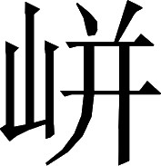
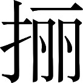

蜀书 · 卷十二
杜周杜许孟来尹李谯郤传第十二
杜微字国辅，梓潼涪人也。少受学于广汉任安〖1〗。刘璋辟为从事，以疾去官。及先主定蜀，微常称聋，闭门不出。
杜微，字国辅，梓潼郡涪县人。他从小在广汉郡学者任安的门下学习。益州牧刘璋聘任他为从事，后来因生病离职。先主平定益州，杜微经常称自己耳聋而闭门不出。
注释
注释 〖1〗
任安（公元 126—204）：字定祖。广汉郡绵竹（今四川德阳市北）人。精通《周易》，以教学为生，是东汉末年益州著名的学者。传见《后汉书》卷七十九上。
后主建兴二年（公元 224），丞相诸葛亮兼任益州牧，用高标准挑选来做下属的，都是益州一直以品德高尚著称的人：其中以秦宓为别驾，五梁为功曹，杜微为主簿。杜微一再推辞，诸葛亮派人把他抬着来。
杜微到成都后，诸葛亮见他，他陈述了谢意。诸葛亮考虑到杜微耳朵聋听不见别人说话，在座位上给他写下一段话说：“早就听说并佩服您的德行，急于想见到您已经历时很久了。可惜您清我浊不能同流，所以一直没有机缘和您会面请教。王元泰、李伯仁、王文仪、杨季休、丁君幹、李永南兄弟、文仲宝等人，每次说起您都要赞叹您高远的志向，使我虽然没有和您见面却感到像是老朋友一般。我无德无才，前来统领贵乡益州，德薄而任重，真是忧虑不已。皇上今年十八岁；天资仁慈聪慧，礼贤下士。天下的人思慕汉朝，所以想和您禀承天意顺从民心，辅佐这位圣明君主，以建立使衰微汉朝重新振兴的功勋，并记载在史册上。开始还以为您贤我愚不可能在一起商议大事，所以一直不敢与您联系，独自忍受思念您的痛苦而已，没有想到您今天会屈驾前来啊！”
注释
注释 〖4〗
饥渴：形容急于见到杜微的心情。
注释 〖5〗
清：指杜微。浊：指诸葛亮自己。这是谦虚的说法。
注释 〖6〗
咨觏（gòu）：请教和会面。
注释 〖7〗
王元泰：即王谋。事见本书卷四十五《杨戏传》。王文仪：即王连。传见本书卷四十一。杨季休：即杨洪（？—公元 228）。传见本书卷四十一。李永南：即李邵。他的哥哥李朝，字伟南。二人事见本书卷四十五《杨戏传》。
注释 〖8〗
未见如旧：虽未曾见过面却好像是老朋友。
注释 〖9〗
空虚：形容自己缺乏才德的谦虚说法。
注释 〖10〗
惨惨：忧心的样子。
注释 〖11〗
朝廷：指皇帝刘禅。
注释 〖12〗
季兴：王朝末代的振兴。
注释 〖13〗
贤：指杜微。愚：指诸葛亮自己。
注释 〖14〗
割绝：断绝（来往）。
注释 〖15〗
守劳：忍受思念的痛苦。
注释 〖16〗
不图自屈：没有想到您自己会屈驾前来。
杜微说自己年老多病请求回去，诸葛亮又写下一段话答复他说：“曹丕杀害天子篡夺皇位，自立为帝，就像用泥土捏成的龙、用草扎成的狗一样，有名而无实。我想与各位贤才针对他的奸邪虚伪，用正道来消灭他；很奇怪您还没有对我进行教诲，立即就要求回转山林田野。曹丕现在正出动大军，前去进攻吴国的扬、荆二州。如果借曹丕境内多事的时机，暂时关闭边境鼓励农业生产，养育人民，同时训练军队，以等待曹丕的挫败；然后出兵讨伐他，可以使将士不作战而百姓不劳累就平定天下。您只要用您的高尚道德来辅佐当今就行了，又不要求您负责具体的军事；为什么急着要想离开啊！”诸葛亮就是这样敬重杜微。
拜为谏议大夫，以从其志。
不过后来仍然只让杜微担任谏议大夫的闲职，以顺从他的志向。
五梁者，字德山，犍为南安人也。以儒学节操称。从议郎迁谏议大夫、五官中郎将。
五梁，字德山，犍为郡南安县人。以擅长儒学而且节操高尚受到人们称赞。他从议郎升到谏议大夫、五官中郎将。
周群，字仲直，巴西郡阆中县人。父亲周舒，字叔布，年轻时向广汉郡人杨厚学习图谶以预言吉凶，名声仅次于董扶、任安。他多次受到朝廷的征召，始终不去。当时有人问他说：“《春秋谶》里面说取代汉朝的是‘当途高’，这是什么意思？”周舒说：“当途高含义为正当大路的高大建筑，就是‘魏’啊。”同乡的读书人私下传说他的这段话。
周群从小跟父亲学习，专心从事守候观察云气的工作。他在庭院里修了一座小楼，他家境富裕而奴婢很多，所以常常叫奴婢在楼上轮流值班观察天上出现的异常云气；刚看到一股云气，就报告周群，他立即上楼观察，不管白天黑夜都坚持不懈。因此凡是有云气出现的征兆，他都能看到；根据云气状况作出的吉凶预言也大多应验。益州牧刘璋，聘请他为师友从事。
注释
注释 〖4〗
候业：守候观察云气的工作。古代认为天空出现的各种云气，都预示着人间的吉凶，所以有专门观望云气的方法，称为候气。观察天象在汉代的巴西郡阆中县可以说有传统，西汉出了杰出的天文学家落下闳，东汉初有任文孙父子，东汉末有周群父子。参见《史记》卷二十六《历书》、《后汉书》卷八十二《方术列传》、《华阳国志》卷十二。
注释 〖5〗
更直：轮换值班。
注释 〖6〗
气候：云气出现的征兆。
裴注
裴注 ﹝一﹞
《续汉书》曰：“建安七年，越嶲有男子化为女人；时群言，哀帝时亦有此：将易代之祥也。至二十五年，献帝果封于山阳。十二年十月，有星孛于鹑尾，荆州分野；群以为，荆州牧将死而失土。明年秋，刘表卒，曹公平荆州。十七年十二月，星孛于五诸侯；群以为，西方专据土地者皆将失土。是时，刘璋据益州，张鲁据汉中，韩遂据凉州，宋建据枹罕。明年冬，曹公遣偏将击凉州：十九年，获宋建；韩遂逃于羌中，被杀；其年秋，璋失益州。二十年秋，曹公攻汉中，张鲁降。”
先主定蜀，署儒林校尉〖7〗。先主欲与曹公争汉中，问群。群对曰：“当得其地，不得其民也；若出偏军，必不利，当戒慎之！”
先主刘备平定益州，任命他为儒林校尉。先主想与曹操争夺汉中，询问周群结果将会如何，周群对答说：“可以得到汉中的土地，但是得不到汉中的人民；如果出动非主力军团，必定失利，应当警惕这一点！”
注释
注释 〖7〗
儒林校尉：官名。是儒学顾问。
当时益州政府的后部司马蜀郡人张裕也懂得观察云气以占卜吉凶，而天赋比周群还强，也劝谏先主说：“不可去争汉中，如果出军必定不利！”先主没有听从张裕的话，果然只得到汉中的土地而没有得到百姓。先主派将军吴兰、雷铜带领一支非主力部队进入武都郡，都被杀死未能回来：正如周群所预料的那样。于是先主举荐周群为茂才。
张裕又私下对人说：“到了庚子年，天下将要改朝换代：刘氏皇朝的传承至此就断绝了。主公得到益州，九年之后，在寅年与卯年之间，将会丢掉它。”有人秘密告发了他说的话。当初，先主与刘璋在涪县相会时，张裕还在刘璋手下当州从事，在旁边作陪。张裕脸上胡须多，先主就开他的玩笑说：“从前我住在涿县，那里姓毛的特别多；东西南北诸家都姓毛。所以涿县的县令就说是‘诸毛绕着涿居住呀’！”张裕一听就知道这句话的谐音是“猪毛绕着啄居住呀”，在影射自己的嘴是猪嘴，当即回答说：“从前有个人做过上党郡潞县的县长，后来升任涿县令。离职回家后，有时给人写信，想写潞县就漏掉了涿县，想写涿县又漏掉了潞县，就干脆署名为‘潞涿君’了。”先主没有胡须，所以张裕用“潞涿君”的谐音“露啄君”戮他的痛处，影射先主的嘴是没毛的猪嘴。
先主从此为张裕的不恭顺而怀恨在心，加上愤恨他泄漏不应当说的政治预言，于是公布张裕劝阻争夺汉中预言不应验的情况；把他逮捕下狱，将要处以死刑。诸葛亮上表请求宽恕张裕，先主回答说：“芳香的兰草花要是长在门口拦路，也不能不锄掉它！”结果张裕被杀死在市场上。后来曹魏取代汉朝，先主去世抛下益州，都如同张裕所预料的那样。张裕又懂得相面术，每次拿起镜子照脸，都知道自己将来会判刑处死，就总是要把镜子摔在地上。
群卒，子巨颇传其术。
周群死后，他的儿子周巨很会传习他那观望云气以占卜吉凶的方法。
杜琼字伯瑜，蜀郡成都人也。少受学于任安，精究安术。刘璋时辟为从事。先主定益州，领牧，以琼为议曹从事。后主践阼，拜谏议大夫。迁左中郎将、大鸿胪、太常。
杜琼，字伯瑜，蜀郡成都县人。他年轻时向任安学习，精通任安所擅长的谶纬。刘璋当益州牧时聘他为从事。先主刘备平定益州，兼任益州牧，任命杜琼为议曹从事。后主登上帝位，杜琼任谏议大夫，升任左中郎将、大鸿胪、太常。
他为人安静沉默，少言寡语，闭门自守，不参预世间的事情；蒋琬、费祎都很器重他。虽然他学问精深，却完全不观察天象并加以论说。后辈中通晓儒学的谯周曾经问他为什么这样，杜琼回答说：“要懂得观察天象以预言吉凶的这种方法很难，又必须亲自观察，辨识形状颜色，不能听信别人的说法。日夜辛苦劳累，然后才知道一切；又还担心泄漏出去惹祸，不如不知道。所以不再去观察天象了。”
谯周借机问道：“从前周舒先生认为‘当途高’就指魏，这是什么道理呢？”杜琼回答说：“魏，是阙的名称，阙正当大路而且高大。这是圣人一种隐喻性的说法。”又问谯周说：“难道还有感到奇怪的地方吗？”谯周说：“还是未能想通为什么就会是魏来取代汉朝。”杜琼又解释说：“古时候称呼官职不说曹；自从汉朝以来，称呼官府机构尽都说曹：而且下级的办事官员叫属曹，官府中的勤务兵叫做侍曹，属曹、侍曹不是属于曹氏、侍奉曹氏么？这大概是天意啊。”
杜微活到八十多岁，在延熙十三年（公元 250）去世。撰有《韩诗章句》一书共十多万字；他在谶纬方面不教儿子，没有人承传他的这种学问。
谯周依照杜琼的话，把道理往同类情况推广，说：“《左传》写晋穆公把自己的太子取名为‘仇’，太子的弟弟取名为‘成师’。晋国的官员师服说：‘我们国君为儿子取名字怎么这样怪异呀！彼此和好的配对称为妃，相互怨恨的配对称为仇；而今国君把太子取名为‘仇’，弟弟倒叫做‘成师’，祸乱的征兆开始出现了：哥哥将要被取代吧？’后来的结果正如师服所说的那样。而汉灵帝把两个儿子取名为‘史侯’、‘董侯’；开始都当上了皇帝，后来都被废为诸侯，与师服的话很相似。本朝的先皇帝名‘备’，备的字义解释是具有的意思；今皇帝名‘禅’，禅的字义解释是授予的意思；好像是说刘氏已经具有了，应当授予别人了：我认为这里的预兆比晋穆侯、汉灵帝给儿子取名字的事例还要明显。”
注释
注释 〖15〗
缘：依照。
注释 〖16〗
触类而长（zhǎng）之：把某一事物的道理推广到其他同一类的事物上去。
注释 〖17〗
著：写明。这里所引述的晋穆侯事，见于《左传》桓公二年。晋穆侯（？—前 785）：名费王。春秋时晋国君主。前 811 至前 785 年在位。事见《史记》卷三十九《晋世家》。
注释 〖18〗
师服：晋国的大夫。
注释 〖19〗
名子：为儿子取名字。伊和成师是晋穆侯的两个儿子。
注释 〖20〗
嘉耦：彼此和好的配对。
注释 〖21〗
怨耦：相互怨恨的配对。
注释 〖22〗
史侯：即东汉少帝刘辩（公元 173—190）。公元 189 年继位。当年就被董卓废为弘农王，次年被杀。事见《后汉书》卷八《灵帝纪》。董侯：即东汉献帝刘协（公元 181—234）。公元 190 至 220 年在位。后被曹丕废黜为山阳公。事详《后汉书》卷九。
注释 〖23〗
训：（词语的）解释。
注释 〖24〗
意者：认为。
后宦人黄皓弄权于内。景耀五年，宫中大树无故自折；周深忧之，无所与言〖25〗，乃书柱曰：“众而大，期之会；具而授，若何复？”言“曹”者众也，“魏”者大也；众而大，天下其当会也；“具”而“授”，如何复有立者乎？
后来宦官黄皓在宫内玩弄权力。景耀五年（公元 262），宫中大树无缘无故自己折断；谯周深感优虑，又不好明说，就在柱子上写了十二个字：“众而大，期之会；具而授，若何复？”其中，众字影射曹字，因为曹字的含义是众多；大字影射魏字，因为魏字的含义是高大的阙；众而大合起来就是曹魏，是说天下都要会聚到曹魏统治之下。具字影射备字，授字影射禅字；具有之后而授予他人，怎么还会有继立的君主呢？
注释
注释 〖25〗
无所与言：不好对人明说。
蜀既亡，咸以周言为验。周曰：“此虽己所推寻，然有所因；由杜君之辞而广之耳，殊无神思独至之异也〖26〗。”
蜀国灭亡后，都认为谯周的预言很灵验，谯周说：“这虽然是我自己推究出来的，不过我也是模仿；只是把杜琼先生的话加以推而广之罢了，至于我自己的思维根本没有什么神奇独到之处。”
注释
注释 〖26〗
神思独至：运用非同寻常的思维而独自想到。
许慈，字仁笃，南阳郡人。他师从著名学者刘熙学习，擅长郑玄学派的儒学，研习《周易》、《尚书》、《三礼》、《毛诗》、《论语》。
汉献帝建安年间，他与许靖等人都从交州进入益州。当时又有魏郡人胡潜，字公兴；不知道为什么会在益州。胡潜的学问虽然不渊博，但是才干突出，记忆力强；祭祀祖宗的制度礼仪，办理丧事时五种丧服的规矩，都能边讲边比划，信手拈来。

先主刘备平定益州，由于此前社会动乱已经持续了一二十年，教育事业衰败荒废；所以他下令收集典籍，清理学校；让许慈、胡潜都担任博士，与孟光、来敏等人负责管理古代文献。这时各种事务都处于草创阶段，一举一动都有各种不同的意见：许慈、胡潜又好胜而自夸，所以相互诽谤争执，以至于声色俱厉；彼此的书籍，也不互通有无借给对方阅读；有时还会使用动手殴打的手段，以震慑对方。他们俩夸耀自己妒忌别人，就到达这样的程度。
 ，虚晚反。
，虚晚反。先主对他们的举动感到痛心，在一次官员的大聚会上，让艺人装成他们二人的模样，模仿他们争执打斗的情形，在酒酣耳热音乐齐奏的时候表演出来，作为娱乐；最初两位艺人以儒经文辞的含义相互辩驳，最后发展到用刀剑武器相威胁，以此来感化批评他们。
孟光，字孝裕，河南郡洛阳县人。他是汉朝太尉孟郁的同族。汉灵帝末年他担任讲部吏。汉献帝时迁都长安，他就逃入益州。益州牧刘焉父子用宾客的礼节对待他。
孟光知识广博熟知古事，无书不读；尤其用心钻研《史记》、《汉书》、《东观汉记》三部史书，通晓汉朝过去的典章。他喜欢《公羊传》而讥评《左传》；每次与来敏争论这两本书的高下，孟光常常吵闹喧嚷。
先主定益州，拜为议郎，与许慈等并掌制度。
先主刘备平定益州，任命他为议郎，与许慈等人一起负责议定制度。
后主践阼，为符节令。屯骑校尉，长乐少府〖6〗，迁大司农。
后主登上帝位，孟光任符节令、屯骑校尉、长乐少府，升为大司农。
注释
注释 〖6〗
符节令：官名。负责管理兵符、官符、节等各类表示官方威权的物品。长乐少府：官名。皇太后的侍从长官。负责处理皇太后宫的事务。
延熙九年（公元 246）秋天，宣布大赦。孟光在大庭广众之中责备执政的大将军费祎说：“赦免罪犯，是对部分人有利而对其他人无利的政策，不是政治清明时代所应有的东西；只有到了极度衰败困窘，万不得已，才可以权且实施它。而今圣上仁慈贤德，百官称职；有什么危在旦夕紧急得像人被倒悬的情况？而要多次施舍反常的恩德，让那些奸恶的罪人得到实惠啊！再说现在正当秋天肃杀之气产生的时候，鹰、隼猛禽开始杀食其他的飞禽；在这时宽恕有罪应当处决的犯人，对上违背了天时，对下伤害了人心。老夫年纪大体力衰，不懂政治的根本，私下认为这种办法难以长久使用；您具有美德受到众人的瞻仰，难道您就用这来回报大家的期望吗？”费祎局促不安只有不断向他表示歉意而已。孟光指责人时总是戳到痛处，大多就像这样；所以执政的大臣，心中不喜欢他，爵位一直与他无缘；每次直言毫无回避，被世人讨厌。担任太常的广汉郡人镡承，担任光禄勋的河东郡人裴俊，年资都在孟光的后面；却占据了上等的官位，处于他之上，大概就是这个原因。
注释
注释 〖7〗
偏枯：树的半边枯死。这里比喻对部分人有利而对其他人无利的政策。大赦仅对罪犯有利，所以用偏枯作比喻。
注释 〖8〗
数（shuò）：多次。
注释 〖9〗
鹰隼（sǔn）：鹰和隼都是猛禽。古人认为秋天具有肃杀之气，鹰隼要到秋季才开始杀食其他飞禽，所以这里以“鹰隼始击”指秋天来临。
注释 〖10〗
治体：政治的根本。
注释 〖11〗
具瞻：为众人所瞻仰。《诗经•节南山》有“赫赫师尹，民所具瞻”的诗句，其中的“师尹”指周王朝的执政大政尹氏，后来即以具瞻代指执政大臣。费祎当时任大将军执掌朝政，所以孟光这样说。
注释 〖12〗
明德：美德。这里意为有美德的人，指费祎。
注释 〖13〗
谢：表示歉意。踧踖（cù jí）：局促不安的样子。
注释 〖14〗
之右：之上。
担任秘书郎的后辈文士郤正，多次向孟光咨询学术问题。孟光向郤正询问太子学习和阅读什么书，以及太子的性情和爱好，郤正问答说：“太子侍奉父母亲很恭敬，昼夜都不懈怠，有古代周文王当太子时的风范；接待各位下属时，一举一动都显示出仁慈宽恕之心。”孟光说：“像您说的这些优点，平常人家的儿子也都具有。而我现今的问题，是想知道他的权谋智计怎么样啊。”
郤正说：“太子的任务，在于承顺父母的心意尽量使他们欢喜，他不能妄自有所作为；再说智计也深藏在胸中，权谋要到时候才施展。这方面的有和没有，怎么可以预先假设啊？”孟光知道郤正谨慎，不作轻率的谈话，就说：“我这个人喜欢直言，无所回避，每次都要指责毛病，受到世人的讥讽和嫌弃；看您的意思也不很喜欢我的话，但是我说这样的话是有原因的。而今天下未定，以智慧为最重要；智慧虽然有天生的，然而也可以通过努力来达到。太子作为储备的君主，读书难道应当仿效我们尽力作到渊博以等待别人来询问，或者像博士探取写有问题的竹简或纸片，一一讲答以谋求爵位的赏赐吗？他读书应当把精力花在急需的方面啊！”郤正对他的话很以为然。
后光坐事免官，年九十余卒。
后来孟光因事被免职，在九十多岁时去世。
来敏，字敬达，义阳郡新野县人。他是来歙的后代。来敏的父亲来艳，曾任汉朝的司空。汉朝末年大乱，来敏随姐姐逃往荆州，而他的姐夫黄琬，是益州牧刘璋祖母的侄儿，所以刘璋派人来迎接黄琬的妻子；来敏就跟姐姐一起进入益州，经常充当刘璋的宾客。他广泛涉猎书籍，熟悉《左传》，尤其专精于《仓颉篇》、《尔雅》中对字词意思的解释，喜欢订正文字。
注释
注释 〖1〗
来歙（？—公元 35）：字君叔。东汉光武帝刘秀的亲戚。新莽末年，投奔刘秀。曾率军参与平定陇西的隗嚣，继又乘胜进攻割据益州的公孙述，中途被刺杀。传见《后汉书》卷十五。
注释 〖2〗
艳：即来艳。字季德。来歙的五世孙。事附《后汉书》卷三十五《来歙传》。
注释 〖3〗
左氏春秋：即《左传》。
注释 〖4〗
《仓》：即《仓颉篇》。秦代李斯撰《仓颉篇》，赵高撰《爰历篇》，胡毋敬撰《博学篇》，三者都是教儿童识字的启蒙课本，汉代统称为《仓颉篇》。又名《三仓》。《雅》：即《尔雅》。我国最早解释词义的专著。由西汉初年的学者汇集各种文献的旧文而成。今存，全书十九篇。训诂：对古书词句意义的解释。
注释 〖5〗
是正：订正。
裴注
裴注 ﹝一﹞
华峤《后汉书》曰：“艳，好学下士，开馆养徒众。少历显位，灵帝时位至司空。”
后主登上帝位，他担任虎贲中郎将。丞相诸葛亮进驻汉中，请他当军祭酒、辅军将军；因事被免职。诸葛亮去世后，他回到成都当大长秋，再被免职。重新起用后多次升迁到光禄大夫职位，又因犯有过失而被贬黜。他前后多次贬官削职，原因都是言语没有节制，举动违反常规。
当时孟光也具有接近机要而说话不谨慎、发议论时干预当时政事的毛病；但是他还比来敏好一些，两人都因为是年老而有名的学者受到世人的尊敬。而来敏出身于荆州有名的家族，又是后主当太子时的老部下，所以特别受到优待，废黜之后又得重新起用。后来朝廷任命来敏为执慎将军，要想让他从这个官名上好好警醒告戒自己。
年九十七，景耀中卒。子忠，亦博览经学，有敏风。与尚书向充等，并能协赞大将军姜维。维善之，以为参军。
他九十七岁时，也就是后主景耀年间去世。儿子来忠，也博览儒经，有来敏的风范。他与尚书向充等人都能帮助支持大将军姜维。姜维很是赞赏，任命他为自己的军事参谋。
尹默，字思潜，梓潼郡涪县人。益州研习儒经的学者大多重视今文学派，而不重视古文学派所擅长的对儒经章节和字句的准确解释；尹默知道他们的学问不够渊博，就远赴荆州，跟从司马徽、宋忠等学者学习古文学派的儒经学问。他通晓儒家经典和史籍；又专精于《左传》，对于各家学者在《左传》研究上的成果，例如刘歆的《条例》，郑众、贾逵父子、陈元、服虔等人的注解，都能背诵复述，不用看着原本。
注释
注释 〖1〗
益部：即益州。今文：经学的流派之一。汉代的经学有今文、古文之分。西汉最初设立的《诗经》、《尚书》、《周易》、《礼》、《春秋》五经博士，所讲授的经文都用当时通行的隶书来书写，叫做今文。景帝时，鲁王刘余从孔子故宅墙壁中得到儒经多种，都用汉以前的文字书写，叫做古文。另外，河间王刘德也献给朝廷一批古文经典。从此产生了今文、古文两派经学。二者的区别不单在所授经文的字体上，在字句、篇章的解释，以及对古代制度、人物的评述等方面，二者也有不同。两汉长期流行今文经学，到东汉后期，由于马融、郑玄的提倡，古文经学才转入兴盛。章句：章节和字句。古文经学非常重视对儒经章节和字句的准确理解，所以常以章句指代古文经学。这里也是如此。
注释 〖2〗
古学：即古文经学。当时司马徽（字德操）、宋忠（字仲子）是荆州学派的领袖人物，既擅长古文经学，又吸收道家思想，开启学术新风气。
注释 〖3〗
《条例》：解释《左传》的著作。《旧唐书》卷四十六《经籍志》上记录有刘歆《春秋左氏传条例》二十卷。
注释 〖4〗
郑众（？—公元 83）：字仲师。出身经学世家，东汉时任左冯翊、大司农，政绩显著。擅长经学，尤其精通《左传》，著有《春秋难记条例》、《春秋删》等。传附《后汉书》卷三十六《郑兴传》。贾逵（公元 20—101）：字景伯。右扶风平陵（今陕西咸阳市西北）人。东汉著名经学家。和帝时官至侍中。精通《左传》，著有经学著作多种。其父贾徽，是刘歆的学生，也长于经学，著有《左氏条例》。传见《后汉书》卷三十六。陈元：字长孙。苍梧郡广信（今广西省梧州市）人。东汉初当过小官。精通《左传》，曾上书请求设立《左传》博士。传见《后汉书》卷三十六。服虔：字子慎。河南荥阳（今河南荥阳市东北）人。东汉灵帝时曾任九江太守。精通《左传》，著有《春秋左氏传解》。传见《后汉书》卷七十九下。
注释 〖5〗
不复按本：不用看着原本。
先主定益州，领牧，以为劝学从事。及立太子，以默为仆（射）〖6〗，以《左氏传》授后主。
先主刘备平定益州，兼任益州牧，任命尹默为劝学从事。先主立太子后，尹默当了太子仆，负责向太子讲授《左传》。
注释
注释 〖6〗
仆：官名。即太子仆。负责管理太子的车马。
后主践阼，拜谏议大夫。丞相亮住汉中，请为军祭酒。亮卒，还成都，拜太中大夫。卒。
太子继承帝位，称后主，任命尹默为谏议大夫。丞相诸葛亮进驻汉中，请他当军祭酒。诸葛亮去世，他回到成都，任太中大夫，此后去世。
子宗传其业，为博士。﹝一﹞
儿子尹宗传习他的学问，曾任博士。
裴注
裴注 ﹝一﹞
宋仲子，后在魏。《魏略》曰：“其子与魏讽谋反，伏诛。魏太子答王朗书曰：‘昔石厚与州吁游，父碏知其与乱；韩子昵田苏，穆子知其好仁。故君子游必有方，居必就士，诚有以也。嗟乎！宋忠无石子先识之明，老罹此祸；今虽欲愿行灭亲之诛，立纯臣之节，尚可得邪！’”
李微，字钦仲，梓潼郡涪县人。父亲李仁，字德贤；与同县人尹默同到荆州游学，跟从司马徽、宋忠学习。李微完全继承了父亲的学问，又随尹默讲论书籍中的含义道理，五经、诸子，无不阅览；此外他又爱好各种技艺，算术、占卜、医药，以及弓弩、机械的设计制造，都曾用心钻研。开始时，他当州政府的书佐、尚书令史。
延熙元年（公元238），后主立太子，任命李微为太子中庶子。升为太子仆。又转任中散大夫、右中郎将，但他依旧在东宫侍从太子。太子因为他的知识丰富，非常喜欢他。不过他为人举止轻率，喜欢开玩笑，所以不受世人的敬重。
他撰有注解《周易》、《尚书》、《毛诗》、《三礼》、《左传》的著作，又作《太玄指归》：他的儒学著作都坚持古文学派的观点，以贾逵、马融的学说为准则，而与郑玄的学说不同；他与曹魏的学者王肃隔得很远，完全没有见过王肃的著作，但是他对儒经作的解释和结论与王肃有很多相同之处。景耀年间他去世。
时又有汉中陈术，字申伯；亦博学多闻，著《释问》七篇、《益部耆旧传》及《志》，位历三郡太守。
当时又有汉中郡人陈术，字申伯；也博学多闻，著有《释问》七篇，以及《益部耆旧传》和《志》，历任三个郡的太守。
谯周，字允南，巴西郡西充国人。父亲谯

，字荣始，钻研《尚书》，兼通其他的儒家经典和图谶。州郡政府聘任他，他都不去；益州政府只好派人到他家授给师友从事的官衔。谯周幼年时就死了父亲，与母亲和哥哥一起生活。他长大后，迷恋古籍潜心学问：尽管家境贫寒，他也从不经营产业；一心诵读典籍，读到满意的地方就欣然露出笑容，甚至于废寝忘食。他精心研习儒家的六部经典，尤其善于写书信。他很懂天文，但是在这方面并不留心去观察；诸子的文章不是他所关注的，就不去从头看到底。他身高八尺，外貌不佳。性格坦诚不掩饰自己，虽然缺乏临时应急的口才，然而内心对事物的认识却反应灵敏。
后主刘禅建兴年间，丞相诸葛亮兼任益州牧，聘谯周为劝学从事。诸葛亮在敌占区去世，谯周在家中得知消息，立即上路去奔丧；不久后主就下诏禁止官员前往奔丧，所以只有谯周动身快速而得以到达。
时后主颇出游观，增广声乐〖1〗。周上疏谏曰：
当时后主常常外出游玩，又增大宫廷乐队的人数。谯周上疏劝谏说：
注释
注释 〖1〗
增广声乐：增大宫廷乐队的人数。
从前王莽失败，豪杰一同起兵，他们跨州占郡，都想争夺皇权。这时的贤才智士盼望得到的领袖，倒不一定是势力强大的，而是德泽深厚的啊。在当时，更始、公孙述以及其他拥有精兵强将的人，大多势力强盛占有辽阔土地，然而他们都随心所欲只图自己痛快，不想行善；只喜欢游玩打猎，大吃大喝，一点不体恤老百姓的痛苦。光武皇帝刚进入河北，冯异等人就劝他说：“应当做人们所不能做的事。”于是他就注意平反冤案，在饮食上节俭，一举一动遵守规矩；因此北方各州的人都歌颂赞叹他，名声传播四方。这时，邓禹从南阳郡追去投奔他；吴汉、寇恂与他虽然素不相识，风闻他的德泽品行之后，就运用权谋带领渔阳、上谷两郡的骑兵冲锋队赶到广阿县去迎接他；其余衷心仰慕光武皇帝的如邳肜、耿纯、刘植等人，还有那带病乘车载着棺材，或者用布带把婴儿系在背上前来投奔的，真是数也数不清。因此，光武皇帝才能转弱为强，消灭王郎，吞并铜马，挫败赤眉而完成帝王大业。
注释
注释 〖2〗
神器：指皇权。
注释 〖3〗
更始：即刘玄（？—公元 25）。字圣公。东汉光武帝刘秀的族兄。新莽末年，随平林农民起义军起事。公元 23 年，被推举为南方农民起义军的首领，称帝，定年号为更始。刘秀是其下属官员之一。不久内部发生变乱，外面又受赤眉农民起义军的进攻，兵败被杀。传见《后汉书》卷十一。
注释 〖4〗
民物：民众。
注释 〖5〗
世祖：光武帝刘秀的庙号。初入河北：公元 23 年，刘秀受更始皇帝的委派，平定黄河以北的地区。刘秀在河北发展自己的势力，后来即脱离更始自立为帝。
注释 〖6〗
冯异（？—公元 34）：字公孙。颍川郡父城（今河南宝丰县东）人。随刘秀起兵，屡有战功。东汉建立，任征西大将军，封阳夏侯。传见《后汉书》卷十七。
注释 〖7〗
行：实行。人：别人。
注释 〖8〗
歌叹：歌颂赞叹。
注释 〖9〗
寇恂（？—公元 36）：字子翼。上谷郡昌平（今北京市昌平区）人。出自当地大族。刘秀进入河北，他劝说上谷太守耿况支持刘秀。后任河内太守，全力供应刘秀大军所需的粮食物资，封雍奴侯。传见《后汉书》卷十六。
注释 〖10〗
权计：权谋。突骑：骑兵冲锋队。广阿：县名。县治在今河北隆尧县东。
注释 〖11〗
邳肜（róng）：字伟君。安平郡信都（今河北衡水市冀州区）人。初为王莽的郡太守。刘秀进入河北，他举城投降，并尽力帮助刘秀在河北发展势力。东汉建立，代理大司空，封灵寿侯。传见《后汉书》卷二十一。刘植：字伯先。钜鹿郡昌城（今河北衡水市冀州区西北）人。新莽末年率众占据昌城，支持进入河北的刘秀，封昌城侯。传见《后汉书》卷二十一。
注释 〖12〗
舆病：带病乘车。
注释 〖13〗
襁负：用布带把婴儿系在背上。
注释 〖14〗
王郎：本为以占卜为生的人。刘秀进入河北时，他被人选来冒充西汉成帝的儿子，立为皇帝，与刘秀对抗。后被刘秀攻杀。事见《后汉书》卷一《光武帝纪》。
注释 〖15〗
铜马：新莽末年农民起义军名。活动在河北地区。
注释 〖16〗
赤眉：新莽末年农民起义军名。曾攻占长安，杀刘玄，立刘盆子为帝，后被刘秀消灭。
后来在洛阳建都，一次光武皇帝想出宫作短暂时间的巡游；他已经坐上车开始出发，铫期前来劝阻他说：“天下还不安宁，为臣确实不愿意陛下穿着平民服装一再外出。”他听了之后立即掉转车头回宫。后来光武皇帝到西边去亲征隗嚣，因为颍川郡发生叛乱，他回转洛阳，只派了寇恂前往颍川讨伐。寇恂说：“颍川郡奸狡巨猾的匪徒因为陛下远征，所以才起来叛乱，他们不知道陛下已经回还，恐怕不会及时投降；陛下如果亲自前去，颍川的叛贼必定会投降。”光武皇帝就亲征颍川，结局果然如寇恂所说的那样。可见他若不是急事，连短暂外出也不敢；真正遇到急事，要想安闲也强迫自己不这么做：帝王就是如此渴望把事做好。所以古书上说：“百姓不可能白白附从你。”确实要先施予德泽啊。
现今汉朝遭逢厄运，天下三分；正是雄壮明哲的人士盼望伟大领袖的时候。陛下天性孝顺到了顶点，为先皇帝居丧超过三年，说到父亲就流泪：即使是古代以孝道著称的曾参、闵损也比不过。陛下又尊敬信任贤才，在让他们为国尽忠心上您又胜过了周成王、周康王；因此，国内和睦一致，上下都共同努力，这些方面的情况为臣说也说不完。但是为臣的最大希望，是希望陛下再推广一步去做那些人们所不能做的好事。凡是拖拉巨大的重量时，担心的就是用力的人不多；解决巨大的困难时，担心的就是好办法太少。再说承担宗庙祭祀的君主尽量做好事，不但是想谋求自己的幸福和保佑，而且也是要用这来给人民作出表率让他们尊重君主。现今四季的祭祀，陛下有时没有亲自参加；至于水池花园的游览，陛下有时候却频繁前去；即使像为臣这样愚昧不通事理的人，也为此深感不安。有忧患和责任在身的人，是没有闲暇尽情享乐的；先皇帝振兴汉朝的遗志，连基本的构想都还没有完成：确实不是尽情享乐的时候。愿陛下裁减宫廷乐队，以及皇宫中新修的工程，只保持维护先皇帝时所建造的一切，以便用节俭的榜样教育下面的子孙。
徒为中散大夫，犹侍太子。于时军旅数出，百姓凋瘁〖1〗。周与尚书令陈祗，论其利害，退而书之，谓之《仇国论》。
此后谯周调任中散大夫，仍然在东宫侍从太子。当时蜀汉不断出兵进攻曹魏，百姓穷困痛苦。谯周与尚书令陈祗，争论这样做的利弊，下来后写成一篇文章，称之为《仇国论》。
注释
注释 〖1〗
凋瘁：衰败困苦。
其辞曰：“因余之国小〖2〗，而肇建之国大；并争于世，而为仇敌。因余之国有高贤卿者，问于伏愚子曰：‘今国事未定，上下劳心。往古之事，能以弱胜强者，其术何如？’伏愚子曰：‘吾闻之：处大无患者恒多慢〖3〗，处小有忧者恒思善；多慢则生乱，思善则生治：理之常也。故周文养民〖4〗，以少取多；勾践恤众〖5〗，以弱毙强〖6〗：此其术也。’贤卿曰：‘曩者项强汉弱，相与战争，无日宁息；然项羽与汉约分鸿沟为界〖7〗，各欲归息民。张良以为民志既定，则难动也；寻帅追羽〖8〗，终弊项氏。岂必由文王之事乎？肇建之国方有疾疢〖9〗，我因其隙，陷其边陲：觊增其疾而毙之也〖10〗。’伏愚子曰：‘当殷、周之际，王侯世尊；君臣久固，民习所专。深根者难拔，据固者难迁。当此之时，虽汉祖安能仗剑鞭马而取天下乎？当秦罢侯置守之后〖11〗，民疲秦役，天下土崩；或岁改主，或月易公；鸟惊兽骇，莫知所从。于是豪强并争，虎裂狼分；疾搏者获多〖12〗，迟后者见吞。今我与肇建皆传国易世矣〖13〗；既非秦末鼎沸之时，实有六国并据之势〖14〗；故可为文王，难为汉祖。夫民疲劳则骚扰之兆生，上慢下暴则瓦解之形起。谚曰：“射幸数跌〖15〗，不如审发〖16〗。”是故智者不为小利移目，不为意似改步〖17〗；时可而后动，数合而后举。故汤、武之师不再战而克，诚重民劳而度时审也。如遂极武黩征〖18〗，土崩势生；不幸遇难，虽有智者，将不能谋之矣。若乃奇变纵横，出入无间〖19〗；冲波截辙，超谷越山；不由舟楫，而济盟津者〖20〗：我愚子也，实所不及！’”
文章说：“因余之国弱小，而肇建之国强大；这两个国家一齐在世间上争斗而成为仇敌。因余之国有个叫高贤卿的，问另外一个叫伏愚子的人说：‘而今我国消灭敌国的大事还没有完成，上下劳心。在古代的事例中，能够以弱国战胜强国的，究竟用了什么方法？’伏愚子回答说：‘我听说，处于力量强大而没有忧患这种状况的人做事经常都很轻率，处于力量弱小而面临忧患这种状况的人经常都想把事情做好；经常都很轻率就会出现乱子，经常都想把事情做好就会出现政治清明的局面：这是不变的规律。因此周文王养育人民，终于以少胜多；勾践抚育百姓，终于以弱灭强：这就是弱国战胜强国的方法。’高贤卿说：‘从前项羽强大而高祖弱小，相互争战，没有一天安宁休止；然而却是项羽提出与高祖以鸿沟为界，各自撤军让人民休息。这时张良认为老百姓的心情一旦安定下来，再要动员他们就很困难了；所以高祖接着就率军追击，终于杀死项羽。这哪里是一定要通过周文王那种途径才能以弱胜强呢？而今肇建之国正有困难，我们借此机会，攻破它的边境：就有希望增大其困难从而消灭它。’伏愚子说：‘在商、周两朝之际，天子诸侯世代尊贵；君臣关系久已稳固，民众已经习惯于在这种统治结构下的生活。根子深就难以拔出，基础牢就难以迁移。在这个时候，即使是汉高祖，也怎么能提起三尺剑扬鞭催马就能夺得天下呢？在秦朝废除封建诸侯而改行郡县制之后，老百姓被秦朝的劳役弄得疲惫不堪，天下因此土崩瓦解；有时一年改一次君主，有时一月换一个王公；人民就像受到惊吓的鸟兽，不知道该随从哪个人。于是豪强纷争，如同虎狼一般抢夺利益；迅速动手的收获多，动作迟缓的被吞灭。而今我国与肇建之国，都已经把君主位置传到第二代了；眼下既不是秦朝末年天下大乱的情景，倒实在像战国时期六国并立的局势；因此可以通过周文王的途径，而难以采用汉高祖的办法。凡是民众疲劳就要出现骚动的征兆，上面轻率而下层官员暴虐就要产生土崩瓦解的趋向。民间的谚语说：“射箭时企图在多次失误中侥幸射中一次，还不如在确实瞄准之后再发射。”所以明智的人不会为小利转移视线，不会为似是而非的现象改变步伐；时机成熟然后才行动，各种因素齐备后然后才出手。商汤、周武王的军队之所以一战成功，就在于他们没有让民众过度疲劳而且能准确地审时度势啊。如果一定要滥用武力轻率发动征伐，到时候土崩瓦解的形势出现；不幸遇到危难，虽然有明智的人也出不了什么好主意了。至于要想找到一种变化莫测的奇谋妙策，使军队能神出鬼没；冲过河流截断道路，跳过峡谷飞越山峰；不用舟船，就能渡过黄河的孟津渡口：那么我这个愚昧的人，对此确实出不了什么好主意啊！’”
注释
注释 〖2〗
因余之国：假托的国名。这里影射蜀汉。下文的肇建之国影射曹魏，伏愚子影射谯周自己。
注释 〖3〗
处：处于。大无患：强大而没有忧患。恒：经常。慢：轻率。
注释 〖4〗
周文：即周文王。
注释 〖5〗
勾践（？—前 465）：春秋末年越国的君主。前 497 至前 465年在位。曾被吴国击败，屈服称臣。后卧薪尝胆，发愤图强，终于灭吴雪耻，并在徐州大会诸侯，成为霸主。传见《史记》卷四十一。恤众：养护民众。
注释 〖6〗
毙：灭亡。
注释 〖7〗
鸿沟：古运河名。约在前 360 年开凿。故道在今河南荥阳市北引黄河水，流向东南而连接黄淮平原多条主要河道，形成水道交通网，对经济和文化的交流起过巨大作用。汉代以后称狼汤渠。
注释 〖8〗
寻帅：接着率军。
注释 〖9〗
疾疢（chèn）：疾病。比喻困难。
注释 〖10〗
觊：希望。
注释 〖11〗
罢侯置守：指废除封建诸侯制，改行郡县制。
注释 〖12〗
疾搏：迅速动手争夺。
注释 〖13〗
传国易世：指经历过皇位的传承。
注释 〖14〗
六国：即战国时期除秦以外的齐、楚、燕、赵、韩、魏六国。
注释 〖15〗
射幸数跌：射箭时企图在多次失误中侥幸射中一次。
注释 〖16〗
审发：确实瞄准之后发射。
注释 〖17〗
意似：似是而非（的现象）。
注释 〖18〗
极武：滥用武力。黩征：轻率发动征伐。
注释 〖19〗
出入无间：神出鬼没。
注释 〖20〗
济：渡过。盟津：黄河古津渡名。即孟津，在今河南偃师市北。
谯周后来升任光禄大夫，地位仅次于九卿。谯周虽然不参与政事，是以儒学和品行受到礼遇；然而朝廷有重大事情的议论时往往要咨询他，他总是根据儒家经典来回答；而后辈中的好学者也经常就一些疑难问题去请教他。
景耀六年（公元 263）冬天，魏国大将邓艾攻克江由，长驱直前。而蜀国原来认为敌军不可能立即杀到，完全没有在后方作出守卫城池的部署；到了听说邓艾已进入成都北面的平原地带，百姓惊扰，都四散奔逃到山野中，制也制止不住。
后主让群臣聚会商议对策，商议半天也拿不出主意。有人认为蜀和吴，本来是盟国，可以逃往吴国。有的认为南中地区有七个郡，周围的险峻山脉使它像斗一样与外界隔绝，容易据守，可以逃往南中。唯有谯周认为：“自古以来，没有寄居在他国当天子的事。如今要逃往吴国，必定要称臣降服才行。再说政治状况没有什么差别时，那么大国能够吞并小国，这是自然而然的事。由此而言，将来是魏能吞并吴，吴却不能吞并魏，明显得很。既然同样是称臣，那么向小国称臣比起向大国称臣来怎么样？两次称臣受辱的羞耻，与一次受辱的羞耻比起来怎么样？如果要逃往南中，就应当早打主意，然后才可以成功。现在大敌当前，灾祸眼看就要临头；下面士兵小吏的心，没有一个可以保证是忠诚的；恐怕一旦动身，就有难以预测的变故出现，还到得了什么南方啊！”
群臣中有的反问他说：“现今邓艾已经距成都不远，恐怕他不会接受投降，怎么办？”谯周回答说：“目前东吴还没有服从魏国，从事势上说邓艾不能不接受我们的投降；接受之后，还不能不给予礼貌的对待。如果陛下降魏之后，魏国不划出土地来封给陛下爵位的话，我谯周将亲自前往洛阳，用古代的道理来为陛下争取！”众人都无法反驳他的意见。
后主犹疑于入南〖15〗，周上疏曰：“或说陛下以北兵深入，有欲适南之计，臣愚以为不安。何者？南方远夷之地，平常无所供为〖16〗，犹数反叛；自丞相亮南征，兵势逼之，穷乃（幸）〔率〕从〖17〗。是后供出官赋，取以给兵，以为愁怨：此患国之人也〖18〗。今以穷迫，欲往依恃，恐必复反叛。一也；北兵之来，非但取蜀而已；若奔南方，必因人势衰，及时赴追。二也；若至南方，外当拒敌，内供服御〖19〗，费用张广〖20〗；他无所取，耗损诸夷必甚，甚必速叛。三也；昔王郎以邯郸僭号〖21〗，时世祖在信都〖22〗，畏逼于郎，欲弃还关中。邳肜谏曰：‘明公西还，则邯郸城民不肯捐父母〖23〗，背城主，而千里送公；其亡叛可必也〖24〗。’世祖从之，遂破邯郸。今北兵至，陛下南行，诚恐邳肜之言复信于今。四也。愿陛下早为之图，可获爵土；若遂适南，势穷乃服，其祸必深。《易》曰：‘亢之为言〖25〗：知得，而不知丧〖26〗；知存，而不知亡。知得失、存亡而不失其正者，其惟圣人乎！’言圣人知命而不苟必也〖27〗。故尧、舜以子不善，知天有授〖28〗，而求授人〖29〗。子虽不肖〖30〗，祸尚未萌，而迎授与人，况祸已至乎？故微子以殷王之昆〖31〗，面缚衔璧而归武王〖32〗：岂所乐哉？不得已也！”
后主对于是否退入南中依然还拿不定主意，谯周就上了一封奏疏说：“有人说陛下因为北方的兵马深入我国，有想退到南中的打算，为臣心里很是不安。为什么呢？南中是边远少数族居住的地区，平常不向国家供给什么东西，都还多次反叛；自从丞相诸葛亮南征，用武力逼迫，他们没有办法才相率服从。从此之后他们要供给公家各种物资，还要抽调壮丁充当士兵，他们因此而愁苦怨恨：这是使国家产生祸患的人啊。而今我们由于处境窘迫，前去依靠他们，恐怕他们一定又会反叛，这是第一点。北方的兵马大举前来，不单是要攻取成都所在的蜀郡这一小块地方而已；如果我们逃往南中，他们必然要趁我们势力衰败的机会，及时追击，这是第二点。到了南中，对外要抗拒敌人，对内要供给皇家使用的物品，费用增大；其他地方又没有财政来源，对各少数族的赋税征调势必加重，加重之后他们就会加速反叛，这是第三点。从前王郎在邯郸超越本分称帝，当时光武皇帝在信都，畏惧王郎的势力，想丢下河北回关中；这时邳肜劝阻他说：‘您如果西回关中，那么这里已经想倒向邯郸王郎的各城百姓，决不肯丢下父母，背弃王郎，千里迢迢跟随您回关中；他们必然会逃跑反叛。’光武皇帝听从他的话没有走，结果攻破邯郸城。现今北方兵马杀到，而陛下往南跑，恐怕邳肜过去的话倒会在今天变成现实，这是第四点。希望陛下早早打定主意，可以得到爵位封地；如果前往南中，到了逼得山穷水尽的时候才投降，那酿成的祸害就大了。《周易》上说：‘亢的含义用语言来解释，是只知得，而不知失；只知存，而不知亡。知道得失存亡而不背离正道，就只有圣人能做到了！’这是说圣人知道天命而不会勉强坚持。所以唐尧、虞舜因为儿子不好，知道君主的权力上天将会另有所授，于是主动谋求把君主位置给予其他人；儿子虽然不成材，也还算不上是祸患，都还把适当的人迎来给予他君主位置，何况是大祸已经临头呢？从前微子是商纣王的异母哥哥，商朝灭亡时他把自己双手反绑口中衔着玉璧，前去投降周武王：他难道又喜欢这样做吗？是不得已的事啊！”
注释
注释 〖15〗
犹：还。疑于入南：对于是否退入南中还拿不定主意。
注释 〖16〗
供为：供给。指向政府缴纳赋税。
注释 〖17〗
率从：相率服从。
注释 〖18〗
患国：使国家产生祸患。
注释 〖19〗
服御：皇家使用的物品。
注释 〖20〗
张广：增大。
注释 〖21〗
以邯郸僭号：在邯郸城越出本分称皇帝。
注释 〖22〗
信都：郡名。治所在今河北衡水市冀州区。
注释 〖23〗
邯郸城民：这里指有心倒向邯郸王郎的信都郡各城人民。捐：离弃。
注释 〖24〗
可必：可以肯定。
注释 〖25〗
亢之为言：亢的含义用语言来解释。这几句出自《周易•乾卦》的《文言》。
注释 〖26〗
丧：丧失。
注释 〖27〗
知命：知道天命。苟必：勉强坚持。
注释 〖28〗
知天有授：知道（君主的权力）上天将另有所授。
注释 〖29〗
授人：（把君主位置）给与其他人。
注释 〖30〗
不肖：不成材。
注释 〖31〗
昆：哥哥。微子是商纣王的异母兄。
注释 〖32〗
面缚衔璧：双手反绑口衔玉璧。这是投降时的举动。
注释
注释 〖33〗
无虞：无忧。
裴注
裴注 ﹝一﹞
孙绰评曰：“谯周说后主降魏，可乎？曰：‘自为天子而乞降请命，何耻之深乎！夫为社稷，死则死之；为社稷，亡则亡之。先君正魏之篡，不与同天矣。推过于其父，俯首而事仇；可谓苟存，岂大居正之道哉！’”
孙盛曰：“《春秋》之义：国君死社稷，卿大夫死位；况称天子，而可辱于人乎！周谓万乘之君偷生苟免，亡礼希利，要冀微荣，惑矣！且以事势言之，理有未尽。何者？禅虽庸主，实无桀、纣之酷；战虽屡北，未有土崩之乱。纵不能君臣固守，背城借一；自可退次东鄙，以思后图。是时，罗宪以重兵据白帝，霍弋以强卒镇夜郎。蜀土险狭，山水峻隔；绝�激湍，非步卒所涉。若悉取舟楫，保据江州；征兵南中，乞师东国；如此，则姜、廖五将自然云从，吴之三师承命电赴：何投寄之无所，而虑于必亡邪？魏师之来，褰国大举；欲追则舟楫靡资，欲留则师老多虞。且屈伸有会，情势代起；徐因思奋之民，以攻骄惰之卒。此越王所以败阖闾，田单所以摧骑劫也；何为匆匆遽自囚虏，下坚壁于敌人，致斫石之至恨哉？葛生有云：‘事之不济则已耳，安能复为之下！’壮哉斯言！可以立懦夫之志矣。观古燕、齐、荆、越之败，或国覆主灭，或鱼悬鸟窜；终能建功立事，康复社稷：岂曰天助，抑亦人谋也。向使怀苟存之计，纳谯周之言；何邦基之能构，令名之可获哉？禅既暗主，周实驽臣；方之申包、田单、范蠡、大夫种，不亦远乎！”
时晋文王为魏相国，以周有全国之功，封阳城亭侯；又下书辟周〖1〗。周发至汉中，困疾不进。
当时晋文王司马昭担任魏朝的相国，因为谯周有保全国家的功劳，封他为阳城亭侯；又下达文书聘谯周为相国府下属。谯周出发中途到达汉中，因病重不能前进入京。
注释
注释 〖1〗
辟周：任命谯周为相国府下属。
魏元帝咸熙二年（公元 265）夏，巴郡人文立从洛阳回益州，来拜访谯周，谯周在谈话中间。在木板上写了八个字给文立看，八个字是：“典午忽兮，月酉没兮。”典午指司马，月酉指八月：到当年八月司马昭果然去世。
注释
注释 〖2〗
过（guō ）：拜访。
注释 〖3〗
典午：典字的含义和司字同，都是掌管之意；午在地支中的排列与十二生肖中的马相应，所以“典午”影射司马氏。忽：迅速。这里指迅速走完生命历程。
注释 〖4〗
月酉：指八月。蜀汉使用夏历，以冬至所在的十一月为子月，十二月为丑月，以下的地支依次与月相配，则八月为酉月。
裴注
裴注 ﹝一﹞
《华阳国志》曰：“文立字广休。少治《毛诗》、《三礼》，兼通群书。刺史费祎命为从事。入为尚书郎，复辟祎大将军东曹掾，稍迁尚书。蜀并于魏，梁州建，首为别驾从事。举秀才。晋泰始二年，拜济阴太守。迁太子中庶子。立上言：‘故蜀大官及尽忠死事者子孙，虽仕郡国；或有不才，同之齐民为剧。又诸葛亮、蒋琬、费祎等子孙，流徙中畿。各宜量才叙用，以慰巴、蜀之心，倾吴人之望。’事皆施行。转散骑常侍，献可替否，多所补纳。稍迁卫尉。中朝服其贤雅，为时名卿。咸宁末卒。立章奏诗赋论颂，凡数十篇。”
晋室践阼，累下诏所在发遣周，周遂舆疾诣洛。泰始三年至，以疾不起，就拜骑都尉。周乃自陈无功而封，求还爵土，皆不听许。
晋朝取代魏朝建立，朝廷多次下诏命令当地遣送谯周入京，谯周只好带病上车前往京城洛阳。在泰始三年（公元 267）到达，谯周到京城后生病不能起床，朝廷派使者到他住处任命他为骑都尉。他向朝廷陈述自己没有功劳而受到封爵，请求退还爵位，朝廷不予允许。
泰始五年（公元 269），我曾经担任家乡所在的巴西郡中正。因为完成了对本郡人才的等级评定工作，请求休假回家探望，前往京城谯周的住处与他告别。他对我说：“过去孔子七十二岁，刘向和扬雄七十一岁去世；而今我年过七十，大概也能活到孔子的岁数，或者可以与刘、扬二人的寿命相同：恐怕不出后年，就一定会长辞人间，不能再相见了！”我怀疑谯周用什么方法推知了自己的寿命，借此机会说了出来。
注释
注释 〖5〗
五年：西晋武帝泰始五年（公元 269）。
注释 〖6〗
中正：官名。负责品评人才。曹魏创行九品中正制，每州、郡各设中正一人，由本郡人士在中央任官者兼任。中正根据家庭先世的贵贱和本人德才的优劣，对人才综合评定一个等级。等级有九，第九品最低而第一品最高。中正每三年定品一次，名单呈送中央后，由吏部尚书根据定品的高低授官，低品授低官，高品授高官。这一制度以后继续实行于两晋南北朝，对政治影响很大。
注释 〖7〗
清定：当时称中正每三年进行一次的定品工作为清定。
注释 〖8〗
刘向（？—前 6）：字子政。西汉皇族。汉元帝时曾任宗正，受宠臣弘恭等人排挤，废黜十多年。成帝即位后再度任用，为光禄大夫。多次上书议论政事。擅长经学，受命主持校理皇家藏书，并撰成我国最早的目录学著作《别录》。传附《汉书》卷三十六《楚元王传》。
泰始六年（公元 270）秋，朝廷任命谯周为散骑常侍；因病重未能接受。到当年冬天他就去世了。总计他的著述，撰写了《法训》、《五经论》、《古史考》之类的文章有一百多篇。
他有三个儿子：即谯熙、谯贤、谯同。小儿子谯同很喜谯周的学问，也以忠诚质朴作为品行的根本；被举荐为孝廉，朝廷任命他为锡县县令。后来又征召他为太子宫中的洗马，但他没有去就任。
裴注
裴注 ﹝四﹞
周长子熙。熙子秀，字元彦。
《晋阳秋》曰：“秀性清静，不交于世。知将大乱，预绝人事，从兄弟及诸亲里不与相见。州、郡辟命；及李雄盗蜀，安车征秀；又雄叔父骧、骧子寿辟命：皆不应。常冠鹿皮，躬耕山薮。永和三年，安西将军桓温，平蜀，表荐秀曰：‘臣闻大朴既亏，则高尚之标显；道丧时昏，则忠贞之义彰。故有洗耳投渊，以振玄邈之风；亦有秉心矫迹，以惇在三之节。是以上代之君，莫不崇重斯轨；所以笃俗训民，静一流竞。伏惟大晋，应符御世。运无常通，时有屯蹇；神州丘墟，三方圮裂；《兔罝》绝响于中林，《白驹》无闻于空谷。斯有识之所悼心，大雅之所叹息者也。陛下圣德嗣兴，方恢天绪。臣昔奉役，有事西土；鲸鲵既悬，思宣大化。访诸故老，搜扬潜逸；庶武罗于羿、浞之墟，想王蠋于亡齐之境。窃闻巴西谯秀，植操贞固；抱德肥遁，扬清渭波。于时，皇极遘道消之会，群黎蹈颠沛之艰：中华有顾瞻之哀，幽谷无迁乔之望。凶命屡招，奸威仍逼；身寄虎吻，危同朝露；而能抗节玉立，誓不降辱；杜门绝迹，不面伪庭。进免龚胜亡身之祸，退无薛方诡对之讥；虽园、绮之栖商、洛，管宁之默辽海：方之于秀，殆无以过。于今西土，以为美谈。夫旌德礼贤，化道之所先；崇表殊节，圣哲之上务。方今六合未康，豺狼当路；遗黎偷薄，义声弗闻；益宜振起道义之徒，以敦流遁之弊。若秀蒙蒲帛之征，足以镇静颓风，轨训嚣俗；幽遐仰流，九服知化矣！’及萧敬叛乱，避难宕渠川中，乡人宗族凭依者以百数。秀年八十，众人以其笃老，欲代之负担。秀拒曰：‘各有老弱，当先营救。吾气力自足堪此，不以垂朽之年累诸君也。’后十余年，卒于家。”
郤正，字令先，河南郡偃师县人。祖父郤俭，汉灵帝末年为益州刺史，被叛乱分子所杀。碰上天下大乱，所以郤正的父亲郤揖留在益州。郤揖在将军孟达手下当营都督，跟随孟达投降魏国，被任命为中书令史。
郤正本来名叫郤纂，从年轻时就因父死母嫁，孤单一人生活；可是他安于贫苦喜欢学习，博览群书，二十岁左右能够写文章。他进入蜀国宫廷当秘书署的办事员，转为令史，升任秘书郎，又升到秘书令。
他生性淡于名利，而尤其用心于文章。像司马相如、王褒、扬雄、班固、傅毅、张衡、蔡邕等汉代著名作家留下的文章、辞赋，以及当代人写的美妙书信、议论，只要是益州有的，无不想尽办法去寻找，全部读遍。
注释
注释 〖8〗
司马：即司马相如。王：即王褒。字子渊。蜀郡成都（今四川成都市）人。西汉宣帝时，以擅长文学而被召到京城，任谏大夫，侍从皇帝。传见《汉书》卷六十四下。扬：即扬雄。班：即班固（公元 32—92）。字孟坚。右扶风平陵（今陕西咸阳市东北）人。东汉史学家、文学家。曾任大将军窦宪的中护军。窦宪专权被杀，他受牵连，死在狱中。以二十多年时间，完成《汉书》，开创了纪传体断代史的体例。又擅长作赋。传附《后汉书》卷四十上《班彪传》。傅：即傅毅。字武仲。右扶风茂陵（今陕西兴平市东北）入。东汉文学家。长期与班固作同僚，也擅长作赋。传见《后汉书》卷八十上。张：即张衡（公元 78—139）。字平子。南阳郡西鄂（今河南南阳东北）人。东汉天文学家、文学家。长期担任太史令。精通天文历算，制造了浑天仪和地动仪。又擅长文学，代表作有《二京赋》、《四愁诗》等。传见《后汉书》卷五十九。蔡：即蔡邕（公元132—192）。字伯喈。陈留郡圉（今河南杞县西南）人。东汉全能型的文化人物。曾任左中郎将。董卓死时表示同情，被捕，死在狱中。精通经学、史学、天文、音乐和书法。文学以散文、辞赋为擅长。传见《后汉书》卷六十下。
注释 〖9〗
益部：益州。
注释 〖10〗
钻凿推求：想尽办法去寻找。
注释 〖11〗
寓目：过目。
自从在皇宫内的秘书署任职，他与宦官黄皓挨着房间相处，长达三十年之久。黄皓从卑微到显贵，以至于操纵威权；郤正既不被黄皓亲爱，也不被黄皓憎恨。所以当官的品级虽然没超过六百石这一级，却能免于忧患。
他依照和效法前辈的儒家学者，借文章来表现自己的志趣，这篇文章叫做《释讥》；是继承崔骃《达旨》之后的同类作品。文章写道：
“或有讥余者曰：‘闻之前记：“夫事与时并，名与功偕。”然则名之与事，前哲之急务也。是故创制作范，匪时不立〖4〗；流称垂名，匪功不记〖5〗。名必须功而乃显〖6〗，事亦俟时以行止；身没名灭，君子所耻。是以达人研道〖7〗，探赜索微〖8〗；观天运之符表〖9〗，考人事之盛衰；辩者驰说〖10〗，智者应机〖11〗；谋夫演略，武士奋威；云合雾集，风激电飞；量时揆宜〖12〗，用取世资〖13〗；小屈大申，存公忽私；虽尺枉而寻直〖14〗，终扬光以发辉也！今三方鼎峙，九有未乂〖15〗；悠悠四海，婴丁祸败〖16〗；嗟道义之沉塞，愍生民之颠沛；此诚圣贤拯救之秋，烈士树功之会也。吾子以高朗之才，珪璋之质〖17〗；兼览博窥，留心道术〖18〗；无远不致，无幽不悉；挺身取命〖19〗，干兹奥秘〖20〗；踌躇紫闼〖21〗，喉舌是执〖22〗；九考不移〖23〗，有入无出；〔一〕究古今之真伪，计时务之得失。虽时献一策，偶进一言；释彼官责〖24〗，慰此素餐〖25〗；固未能输竭忠款〖26〗，尽沥胸肝，排方入直〖27〗，惠彼黎元〖28〗：俾吾徒草鄙〖29〗，并有闻焉也！盍亦绥衡缓辔〖30〗，回轨易途？舆安驾肆〖31〗，思马斯徂〖32〗？审厉揭以投济〖33〗，要夷庚之赫怃〖34〗？播秋兰以芳世，副吾徒之（彼）〔披〕图〖35〗：不亦盛与？’
有讥笑我的人说：“我从以前的古书记载中得知：事业和时机并存，名声与功劳同在。可见事业和名声，乃是以前明智的人所急于追求的。所以要想创建制度树立规范，不到适当的时机无法实现；要想传扬声誉留下美名，不建立功劳根本不行。名声要等到功劳建立才能显扬，事业也要等到时机出现才能完成；人一死名声就立即消失，这是君子最感到羞耻的事情。因此通达事理的人才精心研究自然和社会的规律，探索那深奥隐微的变化；注意天意的征兆表现，还对政治的盛衰进行考察；有口才的四处游说，有智慧的把机会紧抓；有计谋的展现策略，有武艺的奋威冲杀；他们像云朵会合浓雾聚集，他们像暴风骤起闪电纷飞；都在估量合适的时机，用以取得朝思暮想的官位；他们在小处忍让在大处伸展，一心为公而宁愿自己吃亏；虽然局部有曲折而总体趋向正确，所以最终都能如愿以偿发扬光辉啊。如今三国鼎立，天下还没有安定；茫茫四海之内，被灾祸搞得动乱不宁；令人悲叹道义的丧失，怜悯颠沛流离的人民；这正是圣贤拯救社会的时候，建立功业的机会正等待着志士仁人。您具有高超的才干，品质就像珪璋这两种玉器一样美好；博览群书，留心正道；再久远的事情眼光也看得清，再幽微的道理思维也达得到；挺身接受任命，在宫廷里把秘书署的职务担任；从早到晚从容自得地土作，为皇帝起草诏书发布指令；一进皇宫三十年职务不变，再没能往更高的官位迁升。虽然您也研究古今社会的真伪，还对当前政治的得失进行判断；从而有时进呈一条计策，偶尔献上一句忠言；想以此完成当官的职责，安慰自己并没有白吃公家的饭；可是您确实没能够竭尽自己的忠诚，把内心的话语全部送到天子耳边，更没有得到提拔在天子身边担任侍从长官，为老百姓的幸福做出贡献：使美好功绩，在我们这些卑微的人中间流传。您为什么不掉转车头，重新选择一条路前进？让马儿跑得更快速，让车儿行驶得更安稳？弄清楚水的深浅才渡河，挑着那宽阔平坦的路段直往前奔？这样才能建立像秋兰一般芳香的功名，满足我们对您的厚望殷殷：这难道不是一件大好事情？”
注释
注释 〖4〗
匪时不立：不遇到时机建立不起来。
注释 〖5〗
匪功不记：不建立功劳记录不下来。
注释 〖6〗
须功：等待功劳建立。
注释 〖7〗
达人：通达事理的人。
注释 〖8〗
探赜：探求深奥（的道理）。
注释 〖9〗
符表：征兆表现。
注释 〖10〗
驰说：四处游说。
注释 〖11〗
应机：抓住时机（采取行动）。
注释 〖12〗
揆宜：估量合适（的机会）。
注释 〖13〗
世资：官位。
注释 〖14〗
寻：八尺为一寻。“尺枉而寻直”比喻小地方有曲折但总体趋向正确。
注释 〖15〗
九有：九州。《尚书•禹贡》分全国为九州。这里指全国。乂（yì）：安定。
注释 〖16〗
婴丁：遭受。
注释 〖17〗
珪璋：均为玉器名。硅为长条形，上圆下方；璋的形状像珪的一半。都是举行典礼时，帝王或诸侯手中所执的礼器。这里比喻优秀人才。
注释 〖18〗
道术：（治理天下的）道理和方法。
注释 〖19〗
取命：指接受任命。
注释 〖20〗
干（gàn）：承办。奥秘：机密。蜀汉秘书令负责机要文书的草拟，所以这样说。
注释 〖21〗
踌躇：从容自得的样子。紫闼：皇宫。
注释 〖22〗
喉舌：比喻代皇帝起草诏书发布指令。
注释 〖23〗
九考：二十七年。传说虞舜每三年考核一次下属官员，九次考核即二十七年。
注释 〖24〗
官责：当官的职责。
注释 〖25〗
慰此素餐：使自己有白吃饭感觉的心灵得到安慰。
注释 〖26〗
忠款：忠诚。
注释 〖27〗
排方：排开同僚。指从同僚中提拔晋升。入直：进入皇宫值班。指担任侍中之类侍从皇帝的重要职务。
注释 〖28〗
黎元：百姓。
注释 〖29〗
俾：使。吾徒：我们。草鄙：渺小低贱（的人）。
注释 〖30〗
盍（hé）：为什么不。绥（tuǒ）：停止。衡：车辕上的横木。横放在马背上以牵引车辆。这里代指车辆。
注释 〖31〗
舆安驾肆：车辆行驶安稳，拉车的马跑得畅快。
注释 〖32〗
思马斯徂：一心想让马跑得这样快。这是《诗经•� 》中的诗句。
注释 〖33〗
审厉揭：弄清楚水的深浅。厉指水深，揭指水浅。见《诗经•匏有苦叶》。投济：过渡。
注释 〖34〗
要（yāo）：谋求。夷庚：平坦的道路。赫抚（wǔ）：广阔。
注释 〖35〗
披图：展阅地图档册。这里指参与重要行政事务。
我听了之后不禁叹息说：“唉，有像这样说话的吗？世间上人心各不相同，就像人的面貌各不相同一般；您虽然穿戴光洁华丽，显得既漂亮又鲜艳；可惜您是在以管窥天，见识实在短浅；怎么能和您议论八方极远处的形状边界，让您相信万事的大义微言！”
有人随随便便，昂着头扬起眉毛说：“这是什么话啊！这是什么话啊！”
我回答说：“虞舜告戒人不要当面顺从而背后又有不同意见，孔子把讨好自己作为别人的一种缺陷；您所说的话，使我深思一番，我将向您论述和解释我的观点：
从前的鸿荒时代，在蒙昧混沌状态的开初；三皇接受上天的旨意统治民众，接下来五帝又依次担任君主；一直到了夏朝、商朝，这在从前的典籍上都有所记录；后来周朝政治衰败，全靠诸侯的霸主扶持帮助；建立秦朝的嬴政残酷暴虐，恨不得把四面八方的人都吞嚼下肚：于是搞合纵连横的像云一样涌现，主张使用狡诈手段的人多得像天上的繁星；奇异和邪恶像蜂群飞动，智谋和变故像种芽不断萌生；有人掩饰真实兜售虚伪，有人带着奸邪谋求取得光荣；有人耍诡诈手段希望骗到信任，有人卖弄特长自夸自矜；他们都背弃正途崇尚邪门歪道，丢掉正直一味阿谀奉承；在忠诚上不讲臣僚应尽的本分，在道义上没有一贯遵守的准绳：结果商鞅的法律也制止不了邪恶出现，李斯的压制也阻挡不住奸诈的形成；吕不韦门客众多而宗族灭绝，韩非辩论受到重视而以自杀结束生命。
注释
注释 〖5〗
鸿荒：即洪荒。指远古蒙昧混沌的状态。
注释 〖6〗
肇初：初始。
注释 〖7〗
应箓：接受上天的符命（担任君主）。下句“承符”含义相同。
注释 〖8〗
暨：到达。
注释 〖9〗
攸书：所记载。
注释 〖10〗
姬：指姬姓的周王朝。
注释 〖11〗
翼扶：扶助。
注释 〖12〗
嬴氏：指嬴姓的秦王朝。
注释 〖13〗
八区：八方。
注释 〖14〗
狙诈：狡诈。
注释 〖15〗
蜂动：像蜂群一样大量涌现。
注释 〖16〗
雠伪：兜售虚伪（的东西）。
注释 〖17〗
干（gān）荣：谋求荣耀。
注释 〖18〗
要（yāo）上：希望得到上面的信任和重用。
注释 〖19〗
鬻（yù）技：卖弄特长。
注释 〖20〗
鞅：即商鞅。慝（tè）：邪恶。
注释 〖21〗
斯：即李斯。
注释 〖22〗
吕：即吕不韦（？—前 235）。卫国濮阳（今河南濮阳县西南）人。原为大商人，因为帮助秦国公子异人成为太子，异人继位为秦襄王后，任命他为相国，封文信侯。秦王政继位，他继续任相国，称“仲父”。曾攻取周、赵、魏国土地。有门客三千，家僮万人。又令宾客编定《吕氏春秋》二十六篇。后被免职，流放蜀郡，忧惧交加而自杀。传见《史记》卷八十五。
注释 〖23〗
韩：即韩非（？—前 233）。出身韩国贵族。战国末期法家代表人物。与李斯同为荀卿学生。著有《孤愤》、《说难》、《五蠹》等十多万字，受到秦王嬴政的重视。前 234 年任韩国使者前往秦国，被李斯陷害，自杀在狱中。著作今存《韩非子》二十卷。传见《史记》卷六十三。
这是什么原因啊？因为利欲改变了他们的心，荣耀晃花了他们的眼睛；穿着绘有龙形图案的光鲜官服，坐着华丽的车辆到处驰骋；只顾捞取眼前利益，反复无常一点也不安分；生活荒淫迷乱，放纵情欲毁灭自身；结果车铃还没响人就死在车轮下，大门还没跨进住宅就栋折梁倾。上天收取他们的精神，大地吸干他们身上的脂油；别人来吊唁他们的尸体，恶鬼来砍他们的头颅。他们自以为登上高冈，却不料死在幽深的山沟；早晨都还生气勃勃，到晚上就变成孤魂四处漂流。贤人君子看到这些，自然要深谋远虑认真思考一番；害怕遭到他们那样的灾祸，所以才从名利场中抽身走远；宁愿在民间当自由自在的隐士，把污浊社会中的所谓美妙声誉看作是粪土一团。这些人难道真的是轻视君主怠慢百姓，对时事毫不关心吗？因为《周易》中有应当停止的时候就停止的告戒，《诗经》里也有让别人去努力从政的感叹：他们看重和听从这些告戒，所以这样做是出自必然。
注释
注释 〖24〗
回：改变。
注释 〖25〗
龙章：龙形的花纹图案。用在帝王诸侯的仪仗旗帜、礼服上。
注释 〖26〗
铄铄：光亮的样子。
注释 〖27〗
偷幸：只顾眼前利益。
注释 〖28〗
如反如仄：不安分的样子。
注释 〖29〗
恣睢（zì suī）：放纵。自极：毁灭自己。
注释 〖30〗
和鸾：车上的铃铛。调：响声的协调。身在辕侧：指死亡倒在车辕旁边。
注释 〖31〗
庭宁（zhù）：庭院的门。榱（cuī）：屋顶的椽子。
注释 〖32〗
躬：指遗体。
注释 〖33〗
芟（shān ）：割掉。额：这里指头颅。
注释 〖34〗
咎戾：罪过。
注释 〖35〗
高举：高飞。
注释 〖36〗
曳尾于涂中：比喻在民间当自由自在的隐士。语出《庄子•秋水》。
注释 〖37〗
秽：以……为污秽。休誉：美名。
注释 〖38〗
行止之戒：《周易•艮卦》的《彖辞》有“时止则止，时行则行”的话，意思是应当停止的时候就停止，应当行动的时候才行动。
注释 〖39〗
靖恭之叹：《诗经•小明》有“靖恭尔位”的诗句，是普通人希望高级官员恭恭敬敬对待自己的职位。这里指自己置身于政治之外，让别人去努力从政。
自从当初我大汉皇朝建立，承受天意顺应民心；兴隆的政治局面，就像绚丽的三月阳春；低头遵循人间典籍的道理，仰头效法那象征社会安排的天文；散布皇朝的恩泽以照耀人世，实施兴盛的教化以培养人民；君臣一举一动循规蹈矩，各自保持真诚的内心。君主诚恳垂询表现出宏大的气度，臣僚认真献策尽到匡正补救的责任；当官的不会因华而不实得到宠爱，老百姓每人至少有一项值得称赞的品行；上下都勤勉不倦，都想为国家尽忠效命。
然而天地间的规律是有兴隆也有衰败，事物有产生也有消亡；有声音就有寂静的时候，有光明就有阴暗的地方；到了秋天那夏天自会消逝，春天开始那冬天必定隐藏；太阳落山又升起了月亮，汉朝的命运气数衰了又有振兴基业的君主出现在西方。冲帝、质帝相继夭折，桓帝、灵帝时政治衰败局势动荡；于是英雄像云一样涌起，豪杰布满各地都想显示力量；家家有不同的主张，人人有各自的梦想；所以搞合纵连横的忙着出谋划策，主张用狡诈手段的费尽口舌打动对方。
注释
注释 〖7〗
隆窳（yǔ）：兴隆和衰败。
注释 〖8〗
翳（yì）：阴影。
注释 〖9〗
朱阳：指夏天。否（bǐ）：穷尽。
注释 〖10〗
玄阴：指冬天。孟春：初春。
注释 〖11〗
羲和：给太阳驾车的神。这里指太阳。望舒：给月亮驾车的神。这里指月亮。系：继续。
注释 〖12〗
运气：命运气数。耀灵：太阳的别名。这里比喻振兴汉朝基业的君主刘备。陈：陈旧黯淡。
注释 〖13〗
冲：即东汉冲帝刘炳（公元 143—145）。公元 144 至 145 年在位。两岁时当皇帝，三岁时死。事详《后汉书》卷六。质：即东汉质帝刘缵（公元 138—146）。公元 145 至 146 年在位。八岁时当皇帝，九岁时死。事详《后汉书》卷六。
注释 〖14〗
桓：即东汉桓帝刘志。灵：即东汉灵帝刘宏。坠败：衰败。
注释 〖15〗
殊议：不同的主张。
注释 〖16〗
欻（xū）披其胸：迅速敞开心胸。指表达自己的主张。
注释 〖17〗
暂：猛然。
而今汉朝皇位的传承已经接上，天子的恩德正树立在西方的益州；祖先的宏大规划正在实施扩展，对贤才封官晋爵待遇丰厚；推行五方面的教育移风易俗，提倡九种品德使人民个个优秀；恭恭敬敬举行各项祭祀，希望辅佐真命天子使皇朝天长地久。虽然现今分立局面还没有统一，伪立的君主还没有受到严惩；但是圣人早就留下告诫，对天下的百姓要平均贫富一视同仁；因此我国君臣在朝廷和谐执政，黎民百姓在民间欣然拥护一片热情；一旦行动全国整齐一致，停下来也是秩序井然安安静静。官员当中的济济英才，都比得上虞舜的得力大臣；他们有过必改，就像是颜渊那样的仁人；他们处理政事时温和而愉快，政绩不亚于冉有、仲由这两位孔子的学生；他们像鹰、鸷一样勇猛飞腾，承担着伊尹、吕尚曾经承担过的重任；汇总了众多优秀人才的上等策略，其中就有很多像薛公三计那样高明；为了施展像张良、陈平曾经设计的那种秘密策略，国家才出动大军北伐从而把汉朝振兴；这时候的朝廷采用优秀人才还来不及，哪有闲空顾及像枯干笋壳一样的无用之人！
注释
注释 〖18〗
天纲：指东汉王朝的传承。缀：连接。
注释 〖19〗
西邻：西部地区。指蜀汉。
注释 〖20〗
丕：光大。显祖：对已故祖先的美称。
注释 〖21〗
縻好爵：用好的爵位来笼络。
注释 〖22〗
五教：家庭亲属之间五种封建道德准则。即父义、母慈、兄友、弟恭、子孝。
注释 〖23〗
九德：九种品德。说法不一。按《尚书•皋陶谟》的说法，是“宽而栗，柔而立，愿而恭，乱而敬，扰而毅，直而温，简而廉，刚而塞，强而义”。
注释 〖24〗
礿（yuè）祭：古代祭祀名。殷代称春祭为礿，周代称夏祭为礿。这里泛指各种正规祭祀。
注释 〖25〗
峙者：割据对峙者。一：统一。
注释 〖26〗
欣戴：欣然拥护。
注释 〖27〗
重（chóng）规：用圆规重复画圆。在圆心和半径不变时，这样每画一个圆，必定和上一个圆的轨迹重合。比喻行动绝对整齐一致。
注释 〖28〗
元凯：虞舜的得力大臣。《史记》卷一《五帝本纪》记载，出自高辛氏的八位人才，被称为“八元”；出自高阳氏的八位人才，被称“八凯”；他们为虞舜效力，成绩巨大。
注释 〖29〗
颜子：即孔子的得意弟子颜渊。孔子曾称赞颜渊，说他善于改正过失，见《论语•雍也》。
注释 〖30〗
侃侃：温和而快乐的样子。
注释 〖31〗
冉：即冉求（前 522—？）。字子有。孔子学生。有从政才能，曾任季氏宰。季：即仲由（前 542—前480）。字子路，又字季路。孔子学生。也曾任季氏宰，又当过蒲大夫。死于卫国内乱。冉求和仲由二人传均见《史记》卷六十七《仲尼弟子列传》。
注释 〖32〗
鸷（zhì）：凶猛的鸟。
注释 〖33〗
伊：即伊尹。望：即吕望。
注释 〖34〗
薛氏三计：前 196 年，汉高祖刘邦手下的大将黥布起兵反抗中央，刘邦非常忧虑。滕公推荐自己的门客薛公，薛公向刘邦分析了黥布可以选择的上、中、下三种策略，并断定黥布只会选择下策。刘邦根据其分析，及时采取措施，很快消灭了黥布。事见《史记》卷九十一《黥布列传》。
注释 〖35〗
敷：施展。张：即张良。陈：即陈平。
注释 〖36〗
援华英：采用花朵。花朵比喻优秀人才。不遑：来不及。
注释 〖37〗
岂暇：哪里有闲暇。修枯箨（tuò）：整理枯干的笋壳。这里枯箨比喻郤正自己。榛秽：树丛杂草。
不过我虽然没有才干，在朝廷供职已有多年；我把自己托付给国家，心里就把国家当作靠山；我喜欢沧海的深广，也赞叹嵩山的高耸云天；听说了孔子称颂卜商，又为子产不毁乡校而感叹；当初晏婴辅佐君主，也是就实施什么废除什么发表意见；因此我才像瞎子一样胡编乱说，不时把自己的粗浅考虑向上进献；也就相当于市井当中人民的反映，或者是田野牧童吟唱的民间谣谚；希望以此为国家增添幸福，完成我尽力规劝的一贯心愿。如果我的建议合乎圣上的心意，只是愚昧与聪明碰巧吻合，刚好打动了睿智的心灵；如果我的建议不合乎圣上的心意，当然是很自然的事情，我会退下来保守本分。进退都任随命运的安排，不去违背也不怨天尤人；顺应本性乐天安命，我又会有什么憾恨？这就是我为什么一进宫廷就没能出宫升官，为什么有我却像没有我的原因。
注释
注释 〖1〗
纪：十二年为一纪。
注释 〖2〗
嵩岳：即嵩山。在今河南登封市北。
注释 〖3〗
商：即卜商（前 504—？）。字子夏。孔子的学生。对《诗经》诗歌有领悟，为此受到孔子的称赞。传见《史记》卷六十七《仲尼列子列传》。
注释 〖4〗
乡校：乡中的学校。春秋时郑国的人爱聚在乡校里议论执政官。有人劝执政的子产把乡校毁坏，阻止老百姓议政。子产说人们的议论对自己有益，拒绝毁坏乡校。事见《左传》襄公三十一年。
注释 〖5〗
平仲：即晏婴（？—前 500）。字平仲。夷维（今山东高密市）人。春秋时齐国大夫，曾经辅佐灵公、庄公、景公三代。传见《史记》卷六十二。和羹：用调味品制作的多味汤。古代常以和羹比喻对君主的辅佐。
注释 〖6〗
进可：进献可以实施的（建议）。替否：废弃不应当做的。
注释 〖7〗
矇冒瞽说：像瞎子一样胡编乱说。矇和瞽都是瞎子。这是自谦的话。
注释 〖8〗
遒人：在百姓中征求意见的官员名称。
注释 〖9〗
疆：田块的边界。
注释 〖10〗
暗：对自己建议的谦虚说法。
注释 〖11〗
任数：听任命运（的安排）。
注释 〖12〗
矫：违背。诬：抱怨。
我认为经常保持清醒的屈原未免狭隘，像渔父那样经常昏醉也不太好；学习柳下惠忍受屈辱未免低贱，而偏狭的伯夷、叔齐又未免过于清高。合得来时我不认为得到什么，分了手我也并不懊恼；得到好处时不会兴奋得失去节制，失掉好处更不会悲伤得不得了；我既不会拼命往前挤，也不会一味往后靠；决不为了得到利益而出卖名誉，也不会因为害怕贬官而把自己的过错推掉。这样一来我又有什么职责要完成？又有什么白吃饭的愧疚要我去打消？为什么要排开同僚争取提拔？为什么要想靠近皇上把权力抓到？长达三十年没有升官，原因就在于我坚持自己做人准则这一条。
注释
注释 〖13〗
狭：认为……狭隘。屈氏：即屈原。名平，字原。战国时楚国政治家、文学家。出身楚国贵族。在楚怀王时任左徒、三闾大夫。主张革新政治，任用贤能，联合外援抵抗强秦。遭人谗害，被放逐，后投汨罗江而死。是楚辞的代表作家，有《离骚》、《九歌》等名篇传世。传见《史记》卷八十四。常醒：《楚辞》中有《渔父》一篇，记屈原被放逐后同一位渔父的谈话。屈原说“众人皆醉我独醒”，所以遭到放逐。渔父劝他与众人同醉，屈原不同意其看法。
注释 〖14〗
溷（hùn）：认为……污浊。柳季：即展禽。展氏，名获，字禽。又称展季。食邑在柳下，谥号为惠，通常称柳下惠。春秋时鲁国的大夫，曾任掌管刑法监狱的士师。卑辱：柳下惠在鲁国当士师的官，曾三次受到贬黜，有人劝他离开鲁国，他仍然不肯，孔子说他“降志辱身”。见《论语•微子》。
注释 〖15〗
褊（biǎn）：认为……狭隘。夷、叔：即伯夷、叔齐兄弟。高怼（duì）：高尚的怨恨。伯夷、叔齐曾经反对周武王进攻商纣王，认为是以臣伐君。武王灭商，他们感到羞耻，逃到首阳山，不食周粟而死。事见《史记》卷六十一《伯夷列传》。上列的屈原、柳季，属于热心政治的人物；渔父、伯夷、叔齐，属于隐居避世的人物。郤正认为两者都走向极端，自己将采取中庸态度。
注释 〖16〗
合不以得：合得来时不认为得到了什么。
注释 〖17〗
得不充诎（qū）：得到什么时不会（兴奋得）失去节制。
注释 〖18〗
轩：前高后低的车。
注释 〖19〗
轾（zhì）：前低后高的车。
注释 〖20〗
辞愆：推脱过失。忌黜：害怕遭到贬黜。
裴注
裴注 ﹝一﹞
《尚书》曰：“三载考绩，三考黜陟幽明。”九考则二十七年。
现今朝廷的人才济济，出类拔萃者成群；就好比鱼类汇合在大海，鸟类聚集在树林；一只鸟飞走数量不觉得减少，一条鱼游来数量也不觉得加增。再说唐尧时代有洪水泛滥，商朝时又有大雨连下不停；夏禹在阳盱祭祷水神而洪水消退，商汤在桑林祭祷上帝而普降甘霖。所以事物的发动和停止有一定的规律，开启和闭塞也有一定的时间；我的老师留下教导，要我任何时候都不要后悔埋怨；任随命运安排恭敬承受，对此我又有什么话好谈？
注释
注释 〖21〗
朝士：朝廷中的人士。山积：像山一样堆积。形容数量很多。
注释 〖22〗
鳞：指鱼类。介：带有甲壳的水生动物。如龟、蚌等。
注释 〖23〗
毛：指兽类。羽：禽类。邓林：古代神话传说中的大树林。
注释 〖24〗
逝不为之鲜（xiǎn）：飞走了也不会造成数量减少。
注释 〖25〗
鲂（fáng）：一种淡水鱼。这里泛指鱼。臻不为之殷：来到了也不会造成数量增多。
注释 〖26〗
阳灵：太阳。“阳灵幽”指洪水泛滥。唐叶：唐尧时代。
注释 〖27〗
阴精：月亮。“阴精应”指下大雨。
注释 〖28〗
阳盱（xū）：古泽薮名。在今陕西渭水流域。传说唐尧时洪水泛滥，禹受命治水，曾在阳盱祭祷水神。见《淮南子•修务训》。
注释 〖29〗
桑林祷：传说商汤灭夏之后，连续五年大旱，他以自己的身体作为祭品，在桑林祭祷上帝，结果天下大雨。见《吕氏春秋•顺民》。甘泽：好雨。
裴注
裴注 ﹝二﹞
《淮南子》曰：“禹为水，以身请于阳盱之河；汤苦旱，以身祷于桑林之际；圣人之忧民，如此其明也。”《吕氏春秋》曰：“昔殷汤克夏桀而天下大旱，三年不收；汤乃以身祷于桑林曰：‘余一人有罪，无及万方；万方有罪，在余一人；无以一人之不敏，使上帝毁伤民之大命！’汤于是剪其发，

其爪，自以为牺牲，用祈福于上帝。民乃甚悦，雨乃大至。”真正是到了穷途末路的时候，我就恢复平民身份回转家园；阅读各种文献典籍，把孔子的著述深入钻研；写点微不足道的文章以保存正道，为人处事都遵照从前古人的规范；赞同叔肸的优哉游哉，称颂疏广、疏受的勇于辞官，在仕途上适时停止而转头回家，从容自在一直活到老年；面对家中的四面墙壁而心情欢乐，因为从此可以免除从政的祸患；不过考虑到我这颗心还没有完全安静，生怕在仕途的末期招惹灾难；又因为您一再刺激使我激动，所以才充分表白内心的情怀当作自己的誓言。
注释
注释 〖30〗
初节：最初的样子。“反初节”指当平民。
注释 〖31〗
坟典：古代的文献典籍。
注释 〖32〗
孔氏：即孔子。
注释 〖33〗
缀微辞：写一点微不足道的文章。
注释 〖34〗
投制：进行度量。古代以一丈八尺为一制。这里比喻为人处事。
注释 〖35〗
韪（wěi）：赞同。叔肸（xī）：羊舌氏，名肸。又叫叔向。春秋时晋国的大夫。晋平公时任太傅，主张维护旧制，反对改革。前 552 年，执政的范宣子杀他的弟弟羊舌虎，并囚禁叔肸。有人说他处事不明智，他说囚禁总比死和流亡在外好，并引《诗经》中“优哉游哉”、“聊以卒岁”的诗句来证明。见《左传》襄公二十一年。
注释 〖36〗
疏氏：指疏广、疏受叔侄。广字仲翁。东海郡兰陵（今山东兰陵县）人。擅长儒学，专精《春秋》，教授学生很多。西汉宣帝时任太子太傅，其侄疏受任太子少傅。在职五年，都称病还乡，不再当官。传见《汉书》卷七十一。遐逝：远远消逝。
注释 〖37〗
止足：停止和满足。
注释 〖38〗
泛皓然：自由自在生活到老。容裔：从容自得的样子。
注释 〖39〗
欣环堵：欣然面对家中四面的墙壁。
注释 〖40〗
未泰：未能安定。
注释 〖41〗
肆中怀：表白内心的情怀。
从前九方堙善于考察精神以辨识骏马，而秦牙辨识骏马则重视外形；薛烛以善于认出好剑而传扬声誉，而瓠梁则以擅长鼓瑟而获取美名；孟尝君的门客学鸡叫而使主人得救，楚国的小偷用盗窃使国家获得安宁；雍门周借弹琴发表议论，韩哀出名是善于驾马驰骋；卢敖的特长是能飞翔到天宫，而若士更是一纵身子就冲破云层：我实在是没有上述众人的绝技，所以只好让自己静静地保持安宁。”
注释
注释 〖42〗
九方：即九方堙（yīn）。古代善于相马的人。事见《淮南子•道应训》。
注释 〖43〗
秦牙：也是古代善于相马的人。事见《淮南子•齐俗训》。
注释 〖44〗
飞誉：传扬声誉。
注释 〖45〗
瓠梁：古代一位善于唱歌的人。事见《淮南子•齐俗训》。但从本句“托弦”的措辞看，瓠梁应为瓠巴。瓠巴善于鼓瑟，传说他的瑟声能吸引水中的鱼。事见《淮南子•说山训》。
注释 〖46〗
隶：供使唤的人。拊髀（bì）：双手下拍大腿外侧。这是学鸡叫时摹仿公鸡扇动翅膀的动作。济：救助。文：即田文。号孟尝君。战国时齐国贵族。齐滑王时任相国，门下养食客数千人。曾联合韩、魏，打败楚、秦、燕国。后到秦、魏二国任国相。他从秦逃回齐时，过函谷关，为了逃避追兵，他的一个门客摹仿鸡叫，使守关军队提前打开关门，得以安然脱险。传见《史记》卷七十五。
注释 〖47〗
潜寇：悄悄偷盗。荆：即楚国。楚客用偷盗手段保护国家事，见《淮南子•道应训》。
注释 〖48〗
韩哀：古代善于驾车者。又作寒哀。事见《吕氏春秋•勿躬》。
注释 〖49〗
玄阙：神话传说中的仙宫。卢敖游玄阙的传说，见《淮南子•道应训》。
注释 〖50〗
云清：云霄。
注释 〖51〗
齐技：在技艺方面比得上。
裴注
裴注 ﹝三﹞
《淮南子》曰：“秦穆公谓伯乐曰：‘子之年长矣！子姓有可使求马者乎？’对曰：‘良马者，可以形容筋骨相也。相天下之马者，若灭若没，若失若亡；其一若此马者，绝尘（却）〔弭〕辙。臣之子皆下才也，可告以良马而不可告以天下之马。天下之马，臣有所与共儋缠采薪〔者〕九方堙：此其相马，非臣之下也。请见之。’穆公见之，使之求马。三月而返，报曰：‘已得马矣，在于沙丘。’穆公曰：‘何马也？’对曰：‘牝而黄。’使人往取之，牡而骊。穆公不悦，召伯乐而问之曰：‘败矣，子之所使求马者也！毛物牝牡尚弗能知，又何马之能知？’伯乐喟然太息曰：‘一至此乎！是乃所以千万（里）臣而无数者也。若堙之所观者，天机也：得其精，而忘其粗；在其内，而忘其外；见其所见，而不见其所不见；视其所视，而遗其所不视。若彼之所相者，乃有贵乎马者！’马至，而果天下之马也。”《淮南子》又曰：“伯乐、寒风、秦牙、葛青，所相各异，其知马一也；盖九方观其精，秦牙察其形。”
裴注 ﹝四﹞
《越绝书》曰：“昔越王勾践有宝剑五枚，闻于天下。客有能相剑者名薛烛，王召而问之：‘吾有宝剑五，请以示子。’乃取豪曹、巨阙，薛烛曰：‘皆非也！’又取纯钩、湛卢，烛曰：‘观其（剑钞）〔鈲〕，烂烂如列宿之行；观其光，浑浑如水之将溢于塘；观其文，涣涣如冰将释：此所谓纯钩邪？’王曰：‘是也。’王曰：‘客有直之者：有市之乡三，骏马千匹；千户之都二。可乎？’薛烛曰：‘不可！当造此剑之时，赤堇之山破而出锡，若邪之溪涸而出铜；雨师扫洒，雷公击鼓，太一下观，天精下之；欧冶乃因天之精，悉其技巧：一曰纯钩，二曰湛卢。今赤堇之山已合，若邪之溪深而不测，欧冶子已死；虽倾城量金，珠玉竭河，（独）〔犹〕不得此一物。有市之乡三，骏马千匹，千户之都二：亦何足言与！’”
裴注 ﹝五﹞
《淮南子》曰：“瓠巴鼓瑟而鱏鱼听之。”又曰：“瓠梁之歌可随也，而以歌者不可为也。”
裴注 ﹝六﹞
臣松之曰：按此谓孟尝君田文下坐客，能作鸡鸣以济其厄者也。凡作鸡鸣，必先拊髀，以效鸡之拊翼也。
裴注 ﹝七﹞
《淮南子》曰：“楚将子发，好求技道之士。楚有害为偷者，往见曰：‘闻君求技道之士，臣〔楚市〕偷也，愿以技备一卒。’子发闻之，衣不及带，冠不暇正，出见而礼之。左右谏曰：‘偷者，天下之盗也；何为礼之？’君曰：‘此非左右之所得与。’后无几何，齐兴兵伐楚。子发将师以当之，兵三却。楚贤〔良〕大夫皆尽其计而悉其诚，齐师愈强。于是（卒）〔市〕偷进请曰：‘臣有薄技，愿为君行之。’（君）〔子发〕曰：‘诺！’，〔不问其辞而遣之。〕偷即夜出，解齐将军之〔帱〕帐，而献之子发。子发使人归之，曰：‘卒有出采薪者，得将军之帐；使使归于执事。’明日又复往取枕，子发又使归之。明日又复往取簪，子发又使归之。齐师闻之，大骇，将军与军吏谋曰：‘今日不去，楚军恐取吾头矣！’即旋师而去。”
裴注 ﹝八﹞
桓谭《新论》曰：“雍门周以琴见，孟尝君曰：‘先生鼓琴，亦能令文悲乎？’对曰：‘臣之所能令悲者：先贵而后贱，昔富而今贫，摈压穷巷，不交四邻；不若身材高妙，怀质抱真，逢谗罹谤，怨结而不得信；不若交欢而结爱，无怨而生离，远赴绝国，无相见期；不若幼无父母，壮无妻儿，出以野泽为邻，入用堀穴为家，困于朝夕，无所假贷：若此人者，但闻飞乌之号，秋风鸣条，则伤心矣；臣一为之援琴而长太息，未有不凄恻而涕泣者也。今若足下：居则广厦高堂，连闼洞房；下罗帷，来清风；倡优在前，谄谀侍侧；扬激楚舞郑妾；流声以娱耳，练色以淫目；水戏则舫龙舟，建羽旗，鼓钓乎不测之渊；野游则登平原，驰广囿，强弩下高鸟，勇士格猛兽；置酒娱乐，沉醉忘归。方此之时，视天地曾不若一指；虽有善鼓琴，未能动足下也。’孟尝君曰：‘固然！’雍门周曰：‘然臣窃为足下有所常悲：夫角帝而困秦者，君也；连五国而伐楚者，又君也。天下未尝无事，不纵即横；纵成则楚王，横成则秦帝。夫以秦、楚之强而报弱薛，犹磨萧斧而伐朝菌也；有识之士，莫不为足下寒心！天道不常盛，寒署更进退；千秋万岁之后，宗庙必不血食；高台既已倾，曲池又已平；坟墓生荆棘，狐狸穴其中；（游）〔樵〕儿牧竖踯躅其足而歌其上，〔行人见之凄怆〕曰：“孟尝君之尊贵，亦犹若是乎！”于是孟尝君喟然太息，涕泪承睫而未下。雍门周引琴而鼓之，徐动宫徵，叩角羽，终而成曲；孟尝君遂歔欷而就之曰：‘先生鼓琴，令文立若亡国之人也！’”
裴注 ﹝九﹞
《吕氏春秋》曰：“韩哀作御。”王褒《圣主得贤臣颂》曰：“及至驾啮膝，参乘旦；王良执靶，韩哀附舆；纵驰骋骛，忽如景靡；过都越国，蹶如历块；追奔电，逐遗风；周流八极，万里一息：何其辽哉！人马相得也。”
裴注 ﹝十﹞
《淮南子》曰：“卢敖游乎北海，经乎大阴，入乎玄阙，至于蒙毂之上，见一士焉：深目而玄准，戾颈而鸢肩，丰上而杀下，轩轩然方迎风而舞；顾见卢敖，慢然下其臂，遁逃乎碑下。卢敖俯而视之，方卷龟壳而食合梨。卢敖乃与之语曰：‘惟敖为背群离党，穷观于六合之外者，非敖而已乎！敖幼而好游，（长不喻解）〔至长不渝〕；周行四极，惟北阴之不窥。今猝睹夫子于是，子殆可与敖为交乎！’若士者齤然而笑曰：‘嘻乎！子中州民，宁肯而远至此？此犹光乎日月而戴列星，阴阳之所行，四时之所生；此其比夫不名之地，犹突奥也。若我南游乎罔/之野，北息（于）〔乎〕沉墨之乡，西穷冥冥之党，东贯鸿濛之光；此其下无地而上无天，听焉无闻，视焉则眴。此其外犹有沉沉之汜；其余一举而千万里，吾犹未能之在。今子游始至于此，乃语穷观；岂不亦远哉！然子处矣；吾与汗漫，期于九垓之上，吾不可以久〔驻〕。’若士举臂而竦身，遂入云中。卢敖仰而视之，弗见乃止，曰：‘吾比夫子也，犹黄鹄之与壤虫！终日行不离咫尺，自以为远，不亦悲哉！’”
景耀六年，后主从谯周之计，遣使请降于邓艾；其书，正所造也。
到了景耀六年（公元 263），后主听从谯周的计策，派使者向邓艾请求投降；投降的文书，就是郤正写的。
第二年正月，钟会在成都造反作乱，后主东迁洛阳。当时局势混乱而行动仓猝，蜀国大臣没有扶助随从的；只有郤正和殿中督汝南郡人张通，抛下妻室儿女单身跟从。后主依靠郤正的辅导，在到了洛阳后语言举止上妥当合适，没有什么过失；他才感慨叹息，为自己了解郤正太晚而遗憾。当时魏朝的舆论也很赞许郤正，所以魏朝赐他关内侯的爵位。
晋朝建立后的泰始年间，郤正出任安阳县令，升任巴西郡太守。咸宁四年（公元 278）年他去世，总计他所撰写的诗、论、赋等，将近一百篇。
评论说：杜微安静地隐居修身，坚决不愿当官而受人役使；几乎比得上伯夷、商山四位隐居老人的节操。周群观察天上云气占卜吉凶常有应验；杜琼沉默谨慎不泄露秘密，是一个纯正的儒生。许慈、孟光、来敏、李譔，博览群书多见多闻；尹默专精于《左传》：他们虽然不以品德著称，确实都是一代的著名学者。谯周文理渊博通达，是当时的大儒；有董仲舒、扬雄那样的风范。郤正的文章词采灿烂，有张衡、蔡邕那样的特色；加上他行为忠义，君子都认为他这个人很可取。后面这两位在晋朝的事迹少，在蜀国的事迹多，所以也都记载在这一卷里。